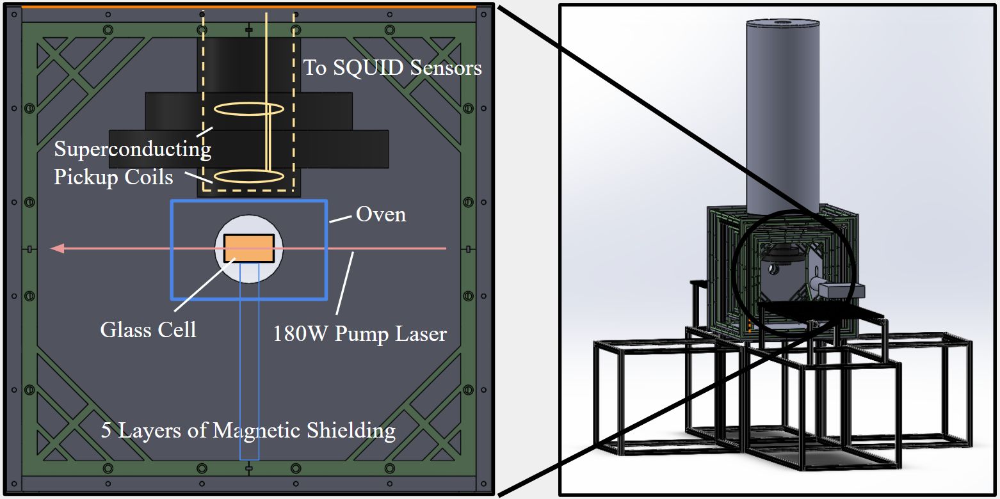
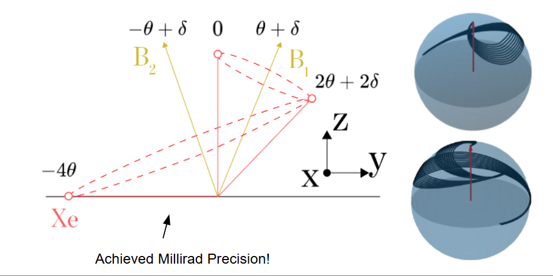
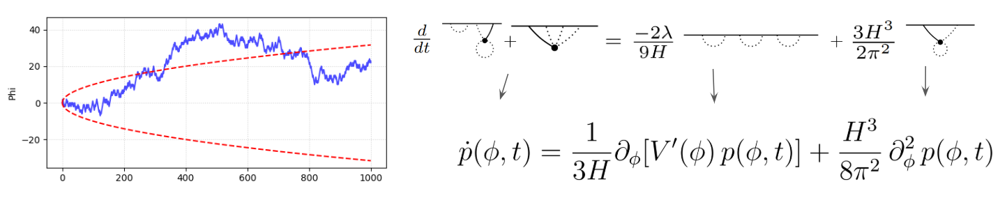

Detecting Ultralight Axions with SQUID Magnetometers

I have the wonderful privledge and responsibility of being a core designer, constructor, and developer of my labs SQUID Comagnetometer experiment, which is set to start taking data before the end of 2026. I have designed several aspects of the experimental structure, including the custom mumetal magnetic shielding, custom field coils, and the squid detection coil loops. I have also contributed significantly to the control and analysis software which will be crutial to the experiment.
Error-Correcting Pulses for co-located Spin Ensembles without Frequency Selectivity

The precision of tipping pulses have been estimated to be a core limiter in precision physics experiments such as Xenon-129 EDM. It is crutial to build pulses that simultaneously tip Xenon-129 and Helium-3 without relying on reasonant-style frequency selectivity which makes the control sequences much too long for current operating fields. I design sharp magnetic field pulses that are not only robust to magnetic field drifts, but remain within an order of magnitude of the quantum speed limit. I demonstrate millirad-level precision in this new pulse scheme, setting the stage for a 30-fold increase in measurement sensitivity.
Are Cosmological Spacetimes Quantum Mechanically Stable?

I maintain active research in theoretical cosmology, specifically stochastic inflation. I leverage a reinterpretation of the time derivative as a morphism on Feynman diagrams in order to compute Next-to-Leading-Log corrections to the Starobinsky's Fokker-Plank Equation. I also provide the NLL corrections to distance-separated scalar correlations, as well as a clear pathway to compute further corrections and what these terms should look like.